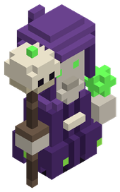
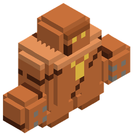
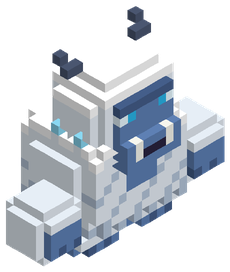
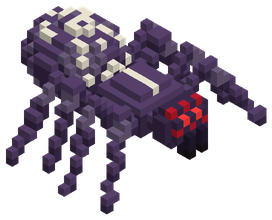
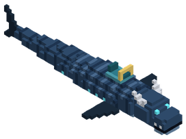

Jefes y enemigos únicos
Los jefes guardan el final de cada mazmorra o dominan un bioma; los únicos son criaturas con nombre propio que sólo aparecen cuando el bioma, la hora, el clima y la altura encajan.
Luna Carmesí. Una de cada 8 noches (de las 19:00 a las 6:00) la luna se tiñe de rojo: vuelven los únicos que ya habías matado, los de nivel 110 o menos suben un 50 % de nivel y parte del botín más raro cae el doble.
Jefes de mundo e incursiones (6)
Cada 8 minutos, si estás a cielo abierto, hay un 35 % de que el jefe de mundo de tu franja de nivel aparezca a unos 45 bloques con su escolta. En grupo su vida sube un 65 % por jugador. Al vencerlo deja su reliquia.
 Ursa Major, el Oso Ancestral del RobledalNiveles 1 – 90Escolta: Lobo, JabalíPiel Titánica de Ursa · Tarro de Miel Primordial
Ursa Major, el Oso Ancestral del RobledalNiveles 1 – 90Escolta: Lobo, JabalíPiel Titánica de Ursa · Tarro de Miel Primordial Skoll, el Lobo de Escarcha AncestralNiveles 80 – 160Escolta: Huargo de Batalla, LoboColmillo Glacial de Skoll · Carne Marinada Alfa
Skoll, el Lobo de Escarcha AncestralNiveles 80 – 160Escolta: Huargo de Batalla, LoboColmillo Glacial de Skoll · Carne Marinada Alfa Roc, el Águila de las TormentasNiveles 150 – 240Escolta: Águila realAlas de Roc · Pico Sagrado de Caza
Roc, el Águila de las TormentasNiveles 150 – 240Escolta: Águila realAlas de Roc · Pico Sagrado de Caza Scolopendra del Abismo ArenosoNiveles 230 – 330Escolta: Serpiente Cascabel de Fuego, Isópodo Acorazado GiganteCaparazón Blindado de Scolopendra · Aguijón Magnum .44
Scolopendra del Abismo ArenosoNiveles 230 – 330Escolta: Serpiente Cascabel de Fuego, Isópodo Acorazado GiganteCaparazón Blindado de Scolopendra · Aguijón Magnum .44 Ymir el Jötunn de EscarchaNiveles 320 – 400Escolta: Yeti de las VentiscasCorazón Latente de Ymir · Hidromiel Helado del Jötunn
Ymir el Jötunn de EscarchaNiveles 320 – 400Escolta: Yeti de las VentiscasCorazón Latente de Ymir · Hidromiel Helado del Jötunn Vulkanor, el Dragón de Fuego PrimigenioNiveles 400 – 500Escolta: Draco de Ceniza, Elemental de Llama VivaRifle Cañón de Vulkanor · Escamas de Dragón Ígneo
Vulkanor, el Dragón de Fuego PrimigenioNiveles 400 – 500Escolta: Draco de Ceniza, Elemental de Llama VivaRifle Cañón de Vulkanor · Escamas de Dragón ÍgneoJefes de mazmorra (16)
 Capitán Esquelético TorvaldCapitán de la CriptaNivel 8 · Las Catacumbas del Roble Caído
Capitán Esquelético TorvaldCapitán de la CriptaNivel 8 · Las Catacumbas del Roble Caído El Capataz Kobold GriknashCapataz KoboldNivel 10 · La Antigua Cantera de los Canteros
El Capataz Kobold GriknashCapataz KoboldNivel 10 · La Antigua Cantera de los Canteros Capitán Fantasma Van Der MeerCapitán FantasmaNivel 10 · La Dama Ahogada
Capitán Fantasma Van Der MeerCapitán FantasmaNivel 10 · La Dama Ahogada Escila la Morena de las BodegasMorena Gigante de las BodegasNivel 11 · La Gruta de los Naufragios Hundidos
Escila la Morena de las BodegasMorena Gigante de las BodegasNivel 11 · La Gruta de los Naufragios Hundidos Gólem Supervisor de HematitaColoso de Hematita de la MinaNivel 32 · Minas Olvidadas de Hematita
Gólem Supervisor de HematitaColoso de Hematita de la MinaNivel 32 · Minas Olvidadas de Hematita Excavadora de Vapor AbandonadaMáquina de Vapor Fuera de ControlNivel 36 · Las Galerías Profundas de la Vena Roja
Excavadora de Vapor AbandonadaMáquina de Vapor Fuera de ControlNivel 36 · Las Galerías Profundas de la Vena Roja La Matriarca Gorgona de CoralMatriarca Gorgona de CoralNivel 38 · El Templo Sumergido de Coral y Mármol
La Matriarca Gorgona de CoralMatriarca Gorgona de CoralNivel 38 · El Templo Sumergido de Coral y Mármol El Nigromante de Azufre Mor'KathSeñor de las Galerías de AzufreNivel 42 · La Cripta de la Ciénaga Olvidada
El Nigromante de Azufre Mor'KathSeñor de las Galerías de AzufreNivel 42 · La Cripta de la Ciénaga Olvidada Faraón Inmortal Akhen'SunFaraón InmortalNivel 75 · La Pirámide Sepultada de Khepri
Faraón Inmortal Akhen'SunFaraón InmortalNivel 75 · La Pirámide Sepultada de Khepri Rey Tritón el Tirano de las MareasTirano de las MareasNivel 88 · La Ciudadela de Nácar de los Tritones Corruptos
Rey Tritón el Tirano de las MareasTirano de las MareasNivel 88 · La Ciudadela de Nácar de los Tritones Corruptos Kukulcán el Devorador de JadeSerpiente Emplumada de JadeNivel 95 · El Ziggurat Sagrado de la Serpiente
Kukulcán el Devorador de JadeSerpiente Emplumada de JadeNivel 95 · El Ziggurat Sagrado de la Serpiente Hrimfaxi el Mamut de Hielo FósilGuardián de las Bóvedas GlaciaresNivel 110 · El Calabozo Glacial del Permafrost
Hrimfaxi el Mamut de Hielo FósilGuardián de las Bóvedas GlaciaresNivel 110 · El Calabozo Glacial del Permafrost Coloso de Basalto VulcanusColoso de BasaltoNivel 170 · La Forja Primordial de Basalto
Coloso de Basalto VulcanusColoso de BasaltoNivel 170 · La Forja Primordial de Basalto Morrigan la Castellana de la BastillaCastellana de la BastillaNivel 210 · La Bastilla de las Sombras del Ocaso
Morrigan la Castellana de la BastillaCastellana de la BastillaNivel 210 · La Bastilla de las Sombras del Ocaso Vorgrath el Dracolich de AdamantioDracolich de AdamantioNivel 320 · La Necrópolis Dracónica de Adamantio
Vorgrath el Dracolich de AdamantioDracolich de AdamantioNivel 320 · La Necrópolis Dracónica de Adamantio Carillón el Guardián de las CampanasGuardián de las CampanasNivel 370 · El Laberinto Resonante de Amatista
Carillón el Guardián de las CampanasGuardián de las CampanasNivel 370 · El Laberinto Resonante de AmatistaEnemigos únicos (46)
 Quelonia del FangoTortuga Aligátor PrimordialNivel 7 · Río
Quelonia del FangoTortuga Aligátor PrimordialNivel 7 · Río Cerdaloth el GlotónJabalí Titánico AlfaNivel 8 · Llanura
Cerdaloth el GlotónJabalí Titánico AlfaNivel 8 · Llanura Karkinos el AcorazadoCangrejo Ermitaño GiganteNivel 9 · Playa
Karkinos el AcorazadoCangrejo Ermitaño GiganteNivel 9 · Playa Silvano SombríoTreant Corrupto del RobleNivel 10 · Bosque
Silvano SombríoTreant Corrupto del RobleNivel 10 · Bosque Vespis RegiaReina Avispa ColosalNivel 11 · Pradera Floral
Vespis RegiaReina Avispa ColosalNivel 11 · Pradera Floral Lupus UmbralisLobo Fantasmal de la TurberaNivel 12 · Arboleda de Otoño
Lupus UmbralisLobo Fantasmal de la TurberaNivel 12 · Arboleda de Otoño Ondina del NaufragioEspíritu de Espuma ArrecifalNivel 25 · Océano
Ondina del NaufragioEspíritu de Espuma ArrecifalNivel 25 · Océano Manticora del PeñascoQuimera Menor del DesfiladeroNivel 28 · Sabana
Manticora del PeñascoQuimera Menor del DesfiladeroNivel 28 · Sabana Bégimo de la PodredumbreGólem de Fango Tóxico y CadáveresNivel 32 · Pantano
Bégimo de la PodredumbreGólem de Fango Tóxico y CadáveresNivel 32 · Pantano UrsoblastoOso Glacial de PlataNivel 35 · Taiga de Pinos, Tierras nevadas
UrsoblastoOso Glacial de PlataNivel 35 · Taiga de Pinos, Tierras nevadas Gólem de HematitaColoso de Hierro RojoNivel 40 · Montaña
Gólem de HematitaColoso de Hierro RojoNivel 40 · Montaña Basilisco de TerracotaReptil Pétreo de Ojos CarmesíNivel 42 · Cañón de Arcilla
Basilisco de TerracotaReptil Pétreo de Ojos CarmesíNivel 42 · Cañón de Arcilla Ziz de los VendavalesAve del Trueno PrimitivaNivel 60 · Estepa Ventosa
Ziz de los VendavalesAve del Trueno PrimitivaNivel 60 · Estepa Ventosa Khepri el Devorador de SolEscarabajo Titán del DesiertoNivel 65 · Desierto
Khepri el Devorador de SolEscarabajo Titán del DesiertoNivel 65 · Desierto Ronin Sombrío JinEspadachín Fantasma del BambúNivel 70 · Bosque de Bambú Ancestral
Ronin Sombrío JinEspadachín Fantasma del BambúNivel 70 · Bosque de Bambú Ancestral Tezcatl el Jaguar de ObsidianaFelino Sagrado del Espejo HumeanteNivel 75 · Selva
Tezcatl el Jaguar de ObsidianaFelino Sagrado del Espejo HumeanteNivel 75 · Selva Wendigo de las VentiscasEspectro del Hambre GlacialNivel 80 · Tierras nevadas
Wendigo de las VentiscasEspectro del Hambre GlacialNivel 80 · Tierras nevadas
Morghul, el Nigromante de la CriptaSeñor de las CatacumbasNivel 85 · Selva de Manglares, Estepa Ventosa Bakunawa la Serpiente LunarSierpe Devoradora de LunasNivel 88 · Selva de Manglares
Bakunawa la Serpiente LunarSierpe Devoradora de LunasNivel 88 · Selva de Manglares Nautiloth el Amonites ColosalCefalópodo Abisal de Concha EspiralNivel 95 · Océano Profundo
Nautiloth el Amonites ColosalCefalópodo Abisal de Concha EspiralNivel 95 · Océano Profundo Mycelion el Devorador de MentesColoso Fúngico IluminadoNivel 135 · Bosque de Hongos Gigantes
Mycelion el Devorador de MentesColoso Fúngico IluminadoNivel 135 · Bosque de Hongos Gigantes Nox el Señor del OcasoCaballero Negro de la Espada FantasmaNivel 150 · Bosque Umbrío
Nox el Señor del OcasoCaballero Negro de la Espada FantasmaNivel 150 · Bosque Umbrío
Gólem de Granito y Hierro ForjadoGuardián de las Forjas EnanasNivel 160 · Cumbres Nubosas, Picos VolcánicosYmir el Jötunn de EscarchaGigante de Hielo MilenarioNivel 160 · Glaciares de Hielo Azul Esfinge de los EspejismosGuardiana Arcano-BestialNivel 175 · Oasis Místico
Esfinge de los EspejismosGuardiana Arcano-BestialNivel 175 · Oasis Místico Ignis el Dragón de BasaltoSierpe de Lava de Escamas ÍgneasNivel 190 · Picos Volcánicos
Ignis el Dragón de BasaltoSierpe de Lava de Escamas ÍgneasNivel 190 · Picos Volcánicos Nimbaroth el Coloso de AerolitaGólem de Islas FlotantesNivel 210 · Cumbres Nubosas
Nimbaroth el Coloso de AerolitaGólem de Islas FlotantesNivel 210 · Cumbres Nubosas Faraón Inmortal KharmesisSeñor de la Gran PirámideNivel 240 · Páramo de Ceniza, Oasis Místico
Faraón Inmortal KharmesisSeñor de la Gran PirámideNivel 240 · Páramo de Ceniza, Oasis Místico Gorgona del Vitriolo EsmeraldaMonstruo Ácido AlfaNivel 250 · Ciénaga Tóxica
Gorgona del Vitriolo EsmeraldaMonstruo Ácido AlfaNivel 250 · Ciénaga Tóxica Typhon el Coloso de SulfuritaTitán de Fuego MuertoNivel 280 · Páramo de Ceniza
Typhon el Coloso de SulfuritaTitán de Fuego MuertoNivel 280 · Páramo de Ceniza Oráculo de Amatista ResonanteGólem Sónico CuánticoNivel 295 · Bosque de Espigas de Cristal
Oráculo de Amatista ResonanteGólem Sónico CuánticoNivel 295 · Bosque de Espigas de Cristal Rex Dracónico PrimordialTirano Sauroide Escamado de FósilNivel 310 · Selva Primordial
Rex Dracónico PrimordialTirano Sauroide Escamado de FósilNivel 310 · Selva Primordial
Rey Yeti del PermafrostSeñor de la Caverna de Hielo MilenarioNivel 315 · Yermo Helado Estigio, Glaciares de Hielo Azul El Segador de Escarcha EstigiaEspectro Glacial del InframundoNivel 340 · Yermo Helado Estigio
El Segador de Escarcha EstigiaEspectro Glacial del InframundoNivel 340 · Yermo Helado Estigio Abzu el Devorador de CorrientesGusano Marino TitánicoNivel 360 · Fosa Abisal
Abzu el Devorador de CorrientesGusano Marino TitánicoNivel 360 · Fosa Abisal Malakor el Señor de Sangre de HierroAvatar de la CorrupciónNivel 375 · Páramo de la Corrupción
Malakor el Señor de Sangre de HierroAvatar de la CorrupciónNivel 375 · Páramo de la Corrupción
Reina Viuda Ácida de la FosaSeñora de los Capullos de SedaNivel 385 · Ciénaga Tóxica, Selva Primordial Serafín del FirmamentoGuardián de Eterio CósmicoNivel 410 · Bosque Celestial
Serafín del FirmamentoGuardián de Eterio CósmicoNivel 410 · Bosque Celestial
Leviatán de la Ciénaga EsmeraldaTerror de los Ríos de LodoNivel 415 · Ciénaga Tóxica Sol'Zul el Espejo ÍgneoEntidad de Silicio y FuegoNivel 420 · Desierto de Vidrio
Sol'Zul el Espejo ÍgneoEntidad de Silicio y FuegoNivel 420 · Desierto de Vidrio Raijin el Tamborilero de la TormentaOni del Rayo CelesteNivel 430 · Cumbres de la Tormenta Eterna
Raijin el Tamborilero de la TormentaOni del Rayo CelesteNivel 430 · Cumbres de la Tormenta Eterna Surtr el Forjador del NúcleoTitán de Magma PrimigenioNivel 440 · Núcleo Ígneo
Surtr el Forjador del NúcleoTitán de Magma PrimigenioNivel 440 · Núcleo Ígneo Vritra la Sierpe de GravitónSierpe de GravitónNivel 450 · Archipiélago Flotante
Vritra la Sierpe de GravitónSierpe de GravitónNivel 450 · Archipiélago Flotante Nihil el Engendro del VórticeAnomalía de Materia del VacíoNivel 460 · Grieta del Vacío
Nihil el Engendro del VórticeAnomalía de Materia del VacíoNivel 460 · Grieta del Vacío Cronos el Titán OlvidadoColoso de Marfil PetrificadoNivel 470 · Valle de los Titanes
Cronos el Titán OlvidadoColoso de Marfil PetrificadoNivel 470 · Valle de los Titanes El Guardián de la SingularidadCentinela del Santuario de la BrechaNivel 490 · Grieta del Vacío, El Borde del Mundo
El Guardián de la SingularidadCentinela del Santuario de la BrechaNivel 490 · Grieta del Vacío, El Borde del MundoOtros jefes (27)
 Lusca, el Tiburón-Pulpo de las FosasNivel 1 · Fosa Abisal
Lusca, el Tiburón-Pulpo de las FosasNivel 1 · Fosa Abisal Titán de Hueso PrimigenioNivel 1 · Valle de los Titanes
Titán de Hueso PrimigenioNivel 1 · Valle de los Titanes El Heraldo del Borde del MundoNivel 1 · El Borde del Mundo
El Heraldo del Borde del MundoNivel 1 · El Borde del Mundo Dragón de Obsidiana MilenarioNivel 1 · Núcleo Ígneo
Dragón de Obsidiana MilenarioNivel 1 · Núcleo Ígneo Hidra Tóxica de Siete CabezasNivel 1 · Ciénaga TóxicaUrsa Major, el Oso Ancestral del RobledalEl Oso Ancestral del RobledalNivel 45 ·
Hidra Tóxica de Siete CabezasNivel 1 · Ciénaga TóxicaUrsa Major, el Oso Ancestral del RobledalEl Oso Ancestral del RobledalNivel 45 ·  Gólem Titán de Magnetita y RocaGólem Titán de MagnetitaNivel 85 · Skoll, el Lobo de Escarcha AncestralEl Lobo de Escarcha AncestralNivel 115 ·
Gólem Titán de Magnetita y RocaGólem Titán de MagnetitaNivel 85 · Skoll, el Lobo de Escarcha AncestralEl Lobo de Escarcha AncestralNivel 115 ·  El Forjador Mecánico de MithrilForjador Mecánico de MithrilNivel 180 ·
El Forjador Mecánico de MithrilForjador Mecánico de MithrilNivel 180 ·  Cthulhu Menor de las SombrasSeñor de las Sombras SumergidasNivel 190 · Roc, el Águila de las TormentasEl Águila de las TormentasNivel 195 · Scolopendra del Abismo ArenosoEl Abismo ArenosoNivel 275 ·
Cthulhu Menor de las SombrasSeñor de las Sombras SumergidasNivel 190 · Roc, el Águila de las TormentasEl Águila de las TormentasNivel 195 · Scolopendra del Abismo ArenosoEl Abismo ArenosoNivel 275 ·  Kharra la Gran Sacerdotisa de la Sangre de HierroGran Sacerdotisa de la Sangre de HierroNivel 320 ·
Kharra la Gran Sacerdotisa de la Sangre de HierroGran Sacerdotisa de la Sangre de HierroNivel 320 ·  El Leviatán Ciego del AbismoLeviatán Ciego del AbismoNivel 340 ·
El Leviatán Ciego del AbismoLeviatán Ciego del AbismoNivel 340 ·  Poseidón de Oricalco (El Coloso Sumergido)Coloso SumergidoNivel 420 ·
Poseidón de Oricalco (El Coloso Sumergido)Coloso SumergidoNivel 420 ·  El Rey Enano de Hierro AutómataRey Enano de Hierro AutómataNivel 420 ·
El Rey Enano de Hierro AutómataRey Enano de Hierro AutómataNivel 420 ·  Zephyros el Titán de las AlturasTitán de las AlturasNivel 430 ·
Zephyros el Titán de las AlturasTitán de las AlturasNivel 430 ·  Karybdis la Reina del MaelstromReina del MaelstromNivel 450 ·
Karybdis la Reina del MaelstromReina del MaelstromNivel 450 ·  Ouroboros el Devorador del MantoDevorador del MantoNivel 450 ·
Ouroboros el Devorador del MantoDevorador del MantoNivel 450 ·  Thor'Kael el Soberano del RelámpagoSoberano del RelámpagoNivel 460 · Vulkanor, el Dragón de Fuego PrimigenioEl Dragón de Fuego PrimigenioNivel 465 ·
Thor'Kael el Soberano del RelámpagoSoberano del RelámpagoNivel 460 · Vulkanor, el Dragón de Fuego PrimigenioEl Dragón de Fuego PrimigenioNivel 465 ·  Ankhor el Corazón del MantoCorazón del MantoNivel 480 ·
Ankhor el Corazón del MantoCorazón del MantoNivel 480 ·  El Behemoth Abisal de Magma y VacíoBehemoth de Magma y VacíoNivel 480 ·
El Behemoth Abisal de Magma y VacíoBehemoth de Magma y VacíoNivel 480 ·  Aethelgard el Dragón Cósmico del ÉterDragón Cósmico del ÉterNivel 485 ·
Aethelgard el Dragón Cósmico del ÉterDragón Cósmico del ÉterNivel 485 ·  El Demiurgo del OrigenLa Sombra del CreadorNivel 500 ·
El Demiurgo del OrigenLa Sombra del CreadorNivel 500 ·  El Gólem del Origen Tectónico (Guardián de la Piedra Alfa)Guardián de la Piedra AlfaNivel 500 ·
El Gólem del Origen Tectónico (Guardián de la Piedra Alfa)Guardián de la Piedra AlfaNivel 500 ·  El Kraken del Génesis (La Mente del Océano Primordial)Mente del Océano PrimordialNivel 500 ·
El Kraken del Génesis (La Mente del Océano Primordial)Mente del Océano PrimordialNivel 500 ·